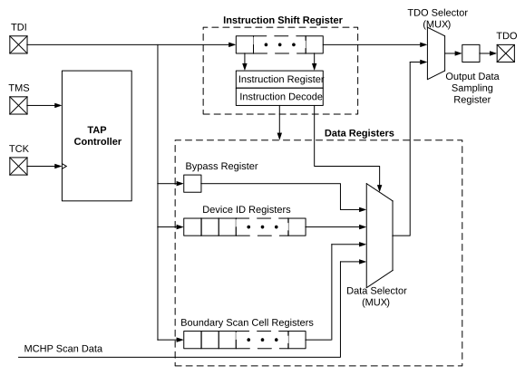

As the complexity and density of board design increases, testing electrical connections between the components on fully assembled circuit boards poses many challenges. To address these challenges, the Joint Test Action Group (JTAG) developed a method for boundary scan testing that was later standardized as IEEE 1149.1-2001, “IEEE Standard Test Access Port and Boundary Scan Architecture”.
The JTAG boundary scan method is the process of adding a Shift register stage adjacent to each of the component’s I/O pins. This permits signals at the component boundaries to be controlled and observed, using a defined set of scan test principles. An external tester or controller provides instructions and reads the results in a serial format. The external device also provides common clock and control signals. Depending on the implementation, access to all test signals is provided through a standardized 4-pin or 5-pin interface.
In system-level applications, individual JTAG enabled components are connected through their individual testing interfaces (in addition to their more standard application-specific connections). Devices are connected in a series or daisy-chained format, with the test output of one device connected exclusively to the test input of the next device in the chain. Instructions in the JTAG boundary scan protocol allow the testing of any one device in the chain, or any combination of devices, without testing the entire chain. In this method, connections between components, as well as connections at the boundary of the application, may be tested.
A typical application incorporating the JTAG boundary scan interface is shown in Figure 39-1. In this example, a PIC microcontroller is daisy-chained to a second JTAG compliant device. Note that the TDI line from the external tester supplies data to the TDI pin of the first device in the chain (in this case, the microcontroller). The resulting test data for this two-device chain is provided from the TDO pin of the second device to the TDO line of the tester. This section describes the JTAG module and its general boundary scan use. The PIC18-Q84 JTAG module does not currently support programming over JTAG.
In PIC18-Q84 devices, hardware for the JTAG boundary scan is a Core Independent Peripheral (CIP) with additional integrated logic in all I/O ports. A logical block diagram of the JTAG module is shown in Figure 39-2. It consists of the following key elements:
